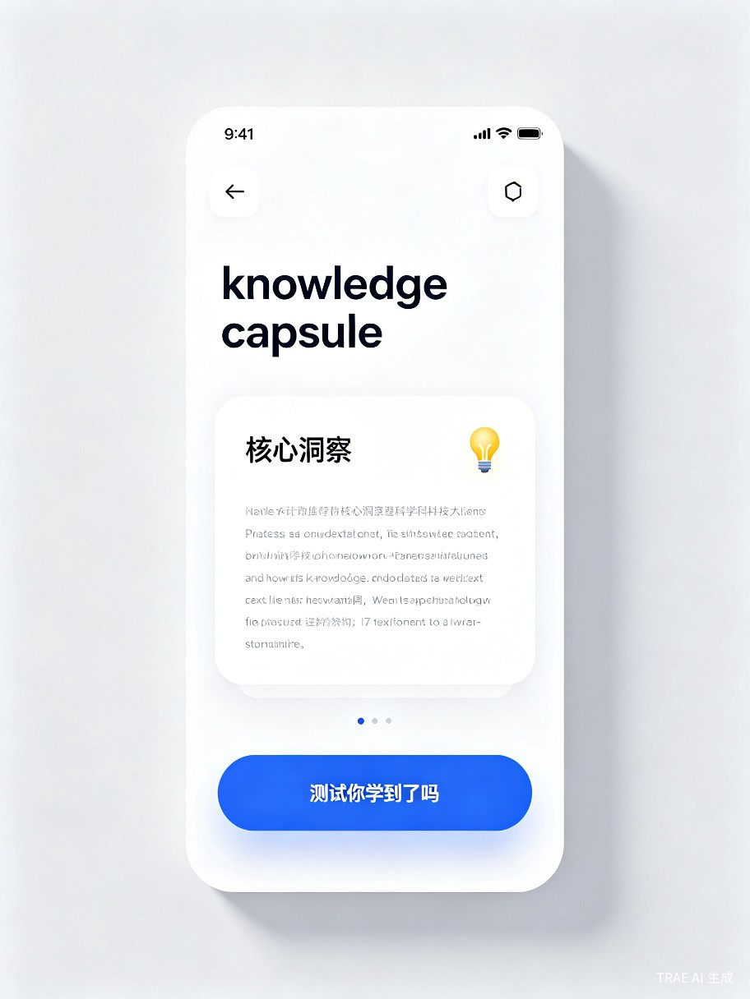

1. 创意介绍
每天，我们被淹没在信息洪流中：行业报告、技术博客、课程讲义、会议纪要…… 想学习，但时间不够；读完了，转头就忘。 这就是「AI 知识胶囊」要解决的问题。
一句话定义：AI 知识胶囊是一个基于对话的微学习工具。你只需粘贴一篇长文，AI 就能将其拆解为一个个"知识胶囊"—— 每个胶囊包含 核心洞察、生活化案例 和 自测问题，让你在碎片时间里真正学进去。
为什么做这个？
我们观察到一个普遍现象：职场人士平均每天花 1.5 小时阅读工作相关材料，但自我评估的知识留存率不足 30%。[1] 传统笔记工具只是"搬运"内容，却没有帮助用户真正理解和内化。TRAE Work 的 AI 对话能力，让我们有机会重新定义"阅读"这件事。
2. 目标用户及痛点
职场白领
每周需阅读大量行业报告、技术文档，但通勤和会议间隙只有 10-15 分钟碎片时间，难以系统学习。
在校学生
课程资料堆积如山，期末复习时才发现读了等于没读，缺乏有效的知识检测手段。
终身学习者
订阅了十几个知识付费产品，但完成率不到 20%，大量已购内容沉睡在收藏夹里。
典型使用场景
通勤路上
在地铁上打开 App，浏览昨天生成的知识胶囊，用 5 分钟复习核心要点。
午休间隙
把上午会议上收到的 20 页 PDF 粘贴进去，午饭后就能获得精华摘要和自测题。
睡前回顾
打开今天的胶囊集，做一轮快速自测，AI 会根据你的薄弱点生成强化胶囊。
核心痛点：没有 AI 知识胶囊，用户要么放弃学习（时间不够），要么花了时间却记不住（方法不对）。两种结果都是巨大的时间浪费。
3. 产品形态
产品以 移动端小程序 为核心载体，支持以下交互方式：

输入内容
支持粘贴文字、上传 PDF、拍照识别文档，或直接输入一个链接让 AI 抓取。
AI 拆解
AI 自动将长文拆解为 3-8 个知识胶囊，每个胶囊包含核心观点、案例类比和一道自测题。
碎片学习
用户可以逐个阅读胶囊、做自测题，AI 根据答题情况智能推送强化内容。
核心特色功能
特色一 知识留存率追踪 —— 通过间隔重复算法（类似 Anki），智能安排复习时间，确保知识真正内化。
特色二 胶囊社交 —— 可以把精心制作的胶囊集分享给同事或同学，一键生成"精华阅读包"。
特色三 个性化案例生成 —— AI 会根据用户的职业和兴趣，为每个知识点匹配最相关的案例。
4. 价值与意义
将1小时阅读压缩为20分钟精学
从平均30%提升至80%以上
不需要任何技术背景
社会价值：知识胶囊致力于缩小"信息获取"与"知识内化"之间的鸿沟。无论你是名校学生还是偏远地区自学者，只要能上网，就能用最低的时间成本获得最高效的学习体验。这是真正的教育普惠。
商业价值
产品采用 免费 + 订阅制 模式：基础版每月可处理 5 篇长文，Pro 版不限量且解锁高级功能（知识图谱、多人协作、企业定制）。目标用户群体庞大——仅中国在线教育市场规模已超 5000 亿元，而"碎片化学习"是增长最快的细分赛道。
5. 技术可行性
本项目完全基于 TRAE Work 构建，充分利用其 AI 对话和代码生成能力：
前端层
基于 Vue 3 + Tailwind CSS，通过 TRAE Work 生成响应式界面，支持移动端适配。
AI 引擎
调用大语言模型 API，通过精心设计的 Prompt 工程实现长文拆解、案例生成和自测出题。
数据层
轻量级存储方案（IndexedDB + 云端同步），确保用户数据安全且跨设备可访问。
6. 用户旅程
从第一次打开到养成习惯：
Day 1：粘贴一篇工作邮件，获得 3 个知识胶囊 → "原来这篇邮件的重点是这个"
Day 3：把上周的行业报告变成 6 个胶囊，午休时做完自测 → "终于搞懂了那个新概念"
Day 7：AI 提醒你复习昨天的薄弱胶囊，你花 2 分钟巩固 → "这次真的记住了"
Day 14：你把一份精彩的胶囊集分享给同事 → "这个工具太好用了，我也要试试"